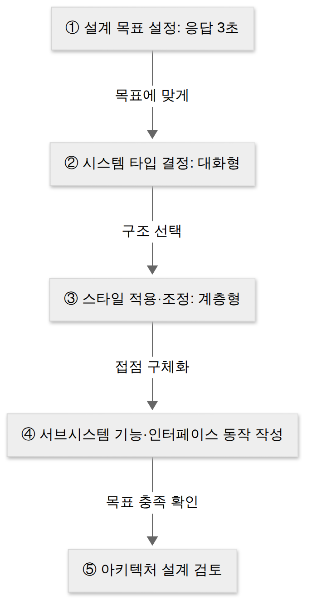
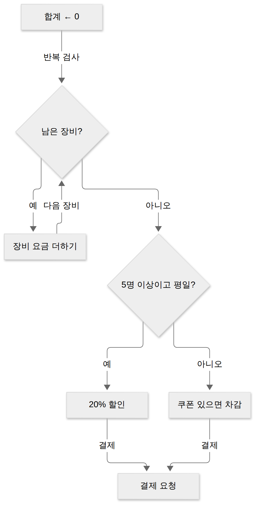

R08 · 설계 모델링 — 설계 유형·협약·상향/하향·코드 설계·HIPO·NS 차트
R08 · 1과목 리뉴얼 · A3
나눈 모듈을 그리고, 번호 붙이고, 문서로 남기기
씽씽 2.0 스프린트 6 · 설계 모델링에서 HIPO와 NS 차트까지
- 구조·행위 모델링과 상위·하위 설계를 다른 분류 축으로 구별합니다.
- 계약 조건과 하향·상향 설계의 전제를 사례에 적용합니다.
- 코드 기능·종류·오류를 구별하고 HIPO·NS 차트로 설계를 읽습니다.
1부 (약 17분)
2부 (약 17분)
장면 0 — 새 개발자가 합류했어요
지난 R07에서 거대한 rentGroup()을 대여·요금·결제 모듈로 나눴습니다. 새로 합류한 개발자는 “요금 계산은 언제 호출하고 무엇을 보장하나요?”라고 묻습니다. 답이 대화 스레드 37곳에 흩어져 있다면, 설계가 아니라 구전 설화가 된 셈입니다.
모델은 복잡한 대상에서 관심 있는 성질만 뽑아 표현한 것입니다. 구현 코드를 전부 읽기 전에 모델로 부품과 실행 흐름을 합의하면, 잘못 나눈 책임이나 빠진 조건을 싸게 발견할 수 있습니다.
| 기본 용어 | 뜻과 오늘 사례 |
|---|---|
| 모듈 | 책임을 가진 구현 단위. FareCalc는 요금 계산을 맡습니다. |
| 프로시저 | 일을 수행하는 절차 단위. 값을 돌려주는 함수와 작업 위주의 서브프로시저가 있습니다. |
| 인터페이스 | 서로 주고받는 접점과 규칙. calc의 입력 형식·반환값·오류 약속입니다. |
| 코드 | 오늘 후반에서는 소스가 아니라 대여소·장비를 나타내는 식별 부호를 뜻합니다. |
장면 1 — 부품도와 시간표를 나눠 그리기
분석에서 “단체 대여가 필요하다”를 정했다면, 설계 모델링은 그것을 어떤 내부 기능과 구조, 동작으로 구현할지 정합니다. 모델을 그리는 목적은 장식이 아니라 표현·분석·검증입니다. 예를 들어 결제 실패 후 대여 상태를 누가 되돌리는지 모델에서 먼저 찾아봅니다.
설계 모델링 원칙 네 가지
변경하기 쉬운 구조는 정책 변경이 관련 없는 곳까지 번지지 않게 하는 구조입니다. 할인율이 바뀌었는데 로그인까지 고친다면 변경 경계가 잘못된 것입니다. 할인 정책을 FareCalc 안에 두면 수정 위치와 재검증 범위를 좁힐 수 있습니다.
함수에는 필요한 자료만 전달합니다. 요금 계산에 인원과 사용 시간만 필요한데 사용자 비밀번호까지 든 거대한 객체를 주면 의존성이 늘어납니다. calc(people, minutes)처럼 필요한 값으로 좁히면 실수와 테스트 준비도 줄어듭니다.
독립적이고 기능적인 모듈로 분할한다는 것은 단순히 파일 수를 늘리라는 뜻이 아닙니다. 요금 계산과 알림 발송처럼 변경 이유가 다른 일을 분리하고, 각 모듈에는 하나의 일에 관련된 요소를 모읍니다. R07의 높은 응집도·낮은 결합도가 여기서 실제 설계 기준이 됩니다.
계층 구조는 큰 책임 아래 세부 책임을 배치해 이해 범위를 나누는 방식입니다. 단체 대여 아래 검증·요금·결제를 배치하면 전체를 본 뒤 필요한 가지로 내려갈 수 있습니다. 파일을 백 개 만들고 설명을 생략하면, 모듈화가 아니라 보물찾기가 됩니다.
구조 모델링과 행위 모델링
구조 모델링은 시스템을 이루는 구성 요소의 관계와 특성을 나타냅니다. 씽씽의 모듈·프로시저, Group 자료 구조, 요금 규칙 파일의 구조가 대상입니다. “무엇이 있고 어떻게 연결되는가”를 묻습니다.
행위 모델링은 시스템이 언제 어떤 순서로 동작하는지 나타냅니다. 인원·시간 데이터가 들어와 검증과 요금 변환을 거쳐 Rental에 저장되는 흐름을 표현합니다. 같은 부품도라도 호출 순서가 바뀌면 결과가 달라지므로 구조 그림 하나로는 부족합니다.
R02의 클래스·배치 같은 구조 다이어그램, R03의 시퀀스·상태 같은 행위 다이어그램은 이 두 관점을 표현하는 구체적 UML 도구였습니다. 오늘의 구조·행위 분류와 다음 장면의 상위·하위 분류는 같은 말이 아닙니다. 전자는 보는 관점이고, 후자는 설계의 상세 수준입니다.
→ 이 장면의 결과물: 부품도와 실행 흐름도. 이제 어느 수준에서 무엇을 결정할지 나눕니다.
장면 2 — 전체 회의와 모듈 내부 회의를 구분하기
두 모델이 필요하다는 것을 알았으니 결정 범위도 나눕니다. 상위 설계는 시스템 수준의 구조와 주요 구현 방침을 정하는 예비 설계·상위 수준 설계입니다. 하위 설계는 구성 요소 내부의 구조와 동적 행위를 구체화하는 모듈 설계입니다.
자료 구조 설계는 분석에서 찾은 정보를 구현에 쓸 구조로 옮깁니다. Group에 인원 목록을 두고 Rental에 시작 시각을 두는 결정입니다. 데이터를 어떤 방식으로 묶는지가 뒤의 처리 알고리즘에도 영향을 줍니다.
아키텍처 설계는 시스템 전체의 구성 요소와 관계를 정합니다. 앱·대여 API·결제 서비스의 경계를 정하는 일입니다. 인터페이스 설계는 사용자나 다른 시스템과 정보를 교환하는 접점을 정합니다. 보험사 API의 요청 형식과 오류 응답을 합의하는 것이 예입니다.
프로시저 설계는 기능을 수행하는 절차를 기술합니다. 요금 계산 뒤 결제를 요청하고 성공 뒤 대여를 확정하도록 정합니다. 협약에 의한 설계는 그 접점을 사용하는 쪽과 제공하는 쪽의 의무·보장을 명시합니다. 이 다섯 항목은 시험에서 상위 설계로 묶습니다.
모듈 설계에서는 FareCalc 안의 변수, 분기, 계산 알고리즘을 정합니다. 프로시저 설계가 상위 분류에 있다는 것과 혼동하지 마세요. 현장에서는 상세 수준이 겹칠 수 있지만, 시험의 분류 질문에서는 “모듈 설계 = 하위 설계”를 기준으로 가릅니다.
협약에 의한 설계: Design by Contract
협약에 의한 설계는 인터페이스를 사용할 때 만족해야 할 조건을 명세해 호출자와 구현자의 책임을 나누는 기법입니다. 단체 요금 계산에 음수 시간을 넘겼을 때와, 정상 입력에 음수 요금을 반환했을 때는 책임이 다릅니다. 계약 조건을 쓰면 “우리 쪽에서는 되는데요” 회의가 짧아집니다.
선행 조건은 호출 전에 호출자가 만족시켜야 할 조건입니다. 인원 2명 이상, 사용 시간 양수가 예입니다. 이를 어긴 입력은 계약이 약속한 정상 동작 범위 밖입니다.
결과 조건은 선행 조건이 지켜진 호출이 정상 종료했을 때 구현자가 보장할 조건입니다. 반환 요금이 0 이상이고 쿠폰이 최대 한 번 차감된다는 약속이 예입니다. 할인 계산을 두 번 해 요금을 음수로 돌려주면 구현자가 보장을 어긴 것입니다.
불변 조건은 객체가 유효한 상태에서 계속 유지해야 하는 성질입니다. 이 사례에서는 보유 수량이 대여 중 수량 이상이라는 관계를 둡니다. 클래스 불변식은 보통 공개 연산의 진입·종료 같은 관찰 경계에서 보장하며, 구현 중 잠시 상태를 갱신하는 순간까지 무조건 참이라는 뜻으로 과장하지 않습니다.
1 · 호출 전people=3, minutes=20. 인원 ≥ 2, 시간 > 0이므로 선행 조건 통과.
호출자가 입장 조건을 지킵니다.
2 · 계산과 상태 유지보유 12대, 대여 중 7대. 요금을 계산해도 대여 중 수량이 보유 수량을 넘지 않습니다.
불변 조건은 유효 상태에 대한 공통 약속입니다.
3 · 정상 반환요금 5,400원, 쿠폰 사용 횟수 1. 결과 조건을 검사합니다.
구현자가 퇴장 보증을 지킵니다.
4 · 책임 비교minutes=-1로 호출했다면 선행 위반. 정상 입력인데 요금=-500을 돌려주면 결과 위반.
입력 실수와 구현 결함을 같은 문제로 뭉개지 않습니다.
→ 이 장면의 결과물: 설계 수준별 결정 목록과 호출 계약. 이제 위에서 쪼갤지 아래에서 조립할지 정합니다.
장면 3 — 목차부터 쓸까, 부품부터 모을까
하향식 설계(Top-down)는 가장 위의 사용자 기능인 Main User Function에서 시작해 하위 기능으로 분할하는 방식입니다. “단체 대여하기”를 검증·요금·결제로 쪼개는 것입니다. 요구 명세가 분명하고 새 시스템을 만들 때 전체 목적을 놓치지 않기 좋습니다.
하향식은 상위에서 인터페이스를 정의하며 내려오므로 통합 때 접점이 이미 정해져 있다는 장점이 있습니다. 그렇다고 하위 자료 구조를 마지막까지 몰라도 된다는 뜻은 아닙니다. 낮은 수준의 자료 구조 세부도 초기에 검토해야 인터페이스의 입력·출력이 실제로 구현 가능한지 알 수 있습니다.
상향식 설계(Bottom-up)는 이미 존재하거나 먼저 만든 하위 기능을 묶어 상위 기능을 구성하는 방식입니다. 쿠폰 모듈·결제 SDK·날짜 유틸리티를 조합하는 씽씽의 개선 작업이 예입니다. 재사용에는 유리하지만 부품의 기능만 좇다 전체 요구를 놓칠 수 있습니다.
상향식에서 기능을 쉽게 추가하려면 부품 사이 인터페이스가 성립되어 있어야 합니다. 서로 다른 금액 단위나 오류 규칙을 조정하지 않은 채 붙이면 통합 비용이 커집니다. 하향식이 목차부터 쓰는 작가라면 상향식은 냉장고 재료로 메뉴를 짜는 요리사지만, 재료의 유통기한 대신 인터페이스를 확인해야 합니다.
직접 해 보기 · “하향식이면 하위 자료 구조는 마지막에만 고민한다”는 옳을까요?
틀립니다. 하위 구현이 실제로 가능한지 판단하려면 낮은 수준의 자료 구조도 초기에 검토해야 합니다. 하향식은 검토 시점 전부를 뒤로 미루는 방법이 아닙니다.
아키텍처 설계 과정
아키텍처 설계 과정은 목표를 실제 시스템 구조로 바꾸고 그 구조가 목표에 맞는지 검토하는 절차입니다. 씽씽에서 “응답 3초”를 먼저 정해야 계층형 구조가 충분한지, 결제를 분리할지 판단할 수 있습니다. 스타일은 구조를 짜는 기본 방식으로, 상세 종류는 R09에서 이어갑니다.

목표 없이 스타일 이름부터 고르면 요구에 맞는 구조가 아니라 발표하기 좋은 구조가 됩니다. 다섯 단계는 목표, 시스템 타입, 스타일 적용·조정, 서브시스템 기능·인터페이스 동작 명세, 설계 검토 순서입니다. 특히 인터페이스 동작을 적은 뒤에 전체 설계를 검토한다는 위치를 기억하세요.
→ 이 장면의 결과물: 분해·조립 방향과 아키텍처 초안. 부품들이 주고받는 데이터에 일관된 이름표를 붙입니다.
장면 4 — 번호 하나에도 설계가 필요해요
코드 설계의 코드는 프로그램 소스가 아닙니다. 자료를 분류하고 조합하기 쉽게 사물에 문자·숫자 부호를 부여하는 규칙입니다. 대여소마다 제멋대로 번호를 붙이면 다른 팀의 재고를 합칠 때 같은 번호가 서로 다른 대상을 가리킬 수 있습니다.
표준화는 모든 팀이 같은 형식과 부여 규칙을 쓰게 하는 기능입니다. 대여소 코드 길이를 통일하면 시스템 간 변환 비용이 줄어듭니다. 분류는 공통 특성을 가진 대상을 묶는 기능으로, 첫 구간을 지역별로 나누면 지역 검색이 쉬워집니다.
식별은 대상을 다른 대상과 구별하는 기능입니다. 같은 지역 장비라도 일련번호로 개별 장비를 찾습니다. 배열은 일정 기준에 따라 순서대로 정렬할 수 있게 하는 기능입니다. 고정 길이 순번은 문자열 정렬에도 유리합니다.
간소화는 긴 설명을 짧은 부호로 줄이는 기능입니다. “서울 강남 42번 장비” 대신 짧은 번호를 씁니다. 연상은 부호를 보고 의미를 떠올리게 하는 기능입니다. GN을 강남 약호로 정하면 담당자가 지역을 짐작할 수 있지만 약호가 많아지면 교육 비용이 듭니다.
암호화 기능은 코드로 내용을 외부에서 쉽게 알 수 없게 표현하는 역할입니다. 다만 내부 순번 대신 다른 번호를 쓴다는 사실만으로 현대 암호학적 안전성이 보장되지는 않습니다. 오류 검출은 체크 디지트처럼 규칙을 추가해 잘못 입력한 번호를 찾아내는 기능이며, 검출과 자동 정정은 다릅니다.
좋은 번호는 명함처럼 짧고 구별하기 쉬워야 합니다. 하지만 의미를 많이 넣을수록 조직 개편 때 번호를 바꿀 위험도 커집니다. 여덟 기능을 모두 최대화하려 하기보다 식별 안정성과 운영 편의의 우선순위를 정합니다. 그래서 코드를 설계할 때는 대상과 코드가 일대일로 대응하는 고유성, 대상이 늘어도 번호를 붙일 수 있는 확장성, 필요 이상으로 자릿수를 늘리지 않는 간결성, 사람이 다루기 쉽고 컴퓨터 처리에도 맞는 형식을 함께 따집니다. “가능한 많은 자릿수로 많은 의미를 담는다”는 좋은 지침이 아닙니다.
→ 이 장면의 결과물: 번호가 해야 할 일 여덟 가지. 다음은 그 일을 실현하는 부여 방식입니다.
장면 5 — 같은 대상에 여섯 가지 번호 붙이기
앞에서 정한 기능은 여러 코드 종류로 구현할 수 있습니다. 종류를 구별할 때는 숫자가 보이는지가 아니라 번호를 어떤 원리로 만들었는지를 보세요. 번호의 주민등록증이 아니라 출생 과정을 확인하는 셈입니다.
연상 코드(Mnemonic)는 이름이나 특징을 떠올리게 하는 약호를 사용합니다. 헬멧 대형을 HLM-L로 적는 것이 예입니다. 사람이 읽기 쉽지만 이름이 비슷한 품목은 약호 충돌을 조정해야 합니다.
블록 코드(Block, 구분 코드)는 공통 특성별로 번호 구간을 확보한 뒤 그 안에서 일련번호를 매깁니다. 강남권 대여소에 1000~1999, 마포권에 2000~2999를 배정하는 방식입니다. 구간별 증설 여유를 잘못 잡으면 번호가 먼저 부족해집니다.
순차 코드(Sequence)는 발생하거나 등록되는 순서대로 번호를 붙입니다. 회원에게 0001, 0002, 0003을 차례로 부여하는 것입니다. 발급은 간단하지만 번호만 보고 회원의 지역이나 등급을 알 수는 없습니다.
표의 숫자 코드(Significant Digit)는 길이·용량 같은 물리적 수치를 부호에 그대로 담습니다. 배터리를 전압-용량-허용속도 조합으로 표현하면 숫자의 의미를 직접 읽을 수 있습니다. 그냥 숫자를 사용했다고 이 종류가 되는 것이 아니라 실제 성질의 값이어야 합니다.
10진 코드(Decimal)는 대상을 열 갈래씩 나누는 십진 계층 분류 방식입니다. 예를 들어 100은 이동 장비, 110은 전동 장비, 111은 소형 전동 장비처럼 상위에서 하위로 세분합니다. 자릿수의 계층은 읽기 쉽지만 분류를 열 갈래로 제한하는 제약이 있습니다. 도서관이 책을 000~900번대로 나누고 다시 세분하는 도서 분류가 대표적인 쓰임입니다.
그룹 분류식 코드(Group Classification)는 여러 분류 기준을 각각의 자리나 구간에 배치합니다. SE-GN-0042에서 권역·지역·개별 순번을 나누는 방식입니다. 10진 코드와 달리 각 분류 단계가 반드시 열 갈래일 필요는 없습니다. 대분류·중분류·소분류처럼 그룹을 나눈 뒤 각 그룹 안에서 순서대로 번호를 붙이는 형태가 전형적이며, 학과 2자리·입학 연도 4자리·순번 3자리로 된 학번도 같은 원리입니다.
한 장 요약 — 아래 표에서는 먼저 부여 규칙 열을 읽고 종류를 가려 보세요.
| 종류 | 부여 규칙과 씽씽 예 |
|---|---|
| 연상 | 의미를 떠올리는 약호: HLM-L |
| 블록 | 구간 배정 후 순번: 강남권 1000~1999 중 1042 |
| 순차 | 등록 순서: 회원 0041 다음 0042 |
| 표의 숫자 | 실제 물성: 배터리 36V·10Ah를 36-10으로 |
| 10진 | 열 갈래 계층: 100 → 110 → 111 |
| 그룹 분류식 | 자리마다 분류 기준: SE-GN-0042 |
직접 해 보기 · SE-GN-0091과 36-10의 차이를 먼저 말해 보세요
앞은 자리별 분류를 담는 그룹 분류식이고, 뒤는 실제 전압·용량을 담는 표의 숫자입니다. 한 코드에 연상 기능 등이 함께 있어도 부여 원리를 기준으로 종류를 판별합니다.
→ 이 장면의 결과물: 여섯 종류의 번호 부여 규칙. 이제 입력할 때 어떤 실수가 생기는지 봅니다.
장면 6 — 손가락이 번호를 바꿔 놓았어요
코드 오류는 부호를 읽거나 입력하는 과정에서 원래 코드와 다른 값이 되는 오류입니다. 정상 장비 대신 다른 장비를 찾게 될 수 있어 입력 검사가 필요합니다. 전위 오류는 두 손가락이 서로 먼저 도착하려다 자리를 바꾼 흔적이라고 생각해 보세요.
사본 오류(필사·오자, Transcription)는 글자를 다른 글자로 잘못 옮기는 오류입니다. 48215를 48715로 적으면 한 자리가 바뀌었으나 길이는 같습니다. 전위 오류(Transposition)는 이웃한 두 글자의 순서가 뒤집히는 오류로, 48215를 42815로 적는 경우입니다.
이중 전위 오류(Double Transposition)는 자리 맞바꿈이 두 쌍에서 일어나는 경우입니다. 48215를 84251로 적으면 앞의 4·8과 뒤의 1·5가 각각 뒤집혔습니다. 사본 오류처럼 문자가 대체된 것이 아니라 원래 문자들의 위치가 변했습니다.
생략 오류(Omission)는 필요한 문자가 빠지는 오류입니다. 48215를 4825로 적으면 1이 사라집니다. 첨가 오류(Addition)는 없던 문자가 더 들어가는 오류로, 482115처럼 1을 한 번 더 누르는 경우입니다. 다른 분류에서 임의 오류라는 이름도 쓰지만 오늘은 이 다섯 형태를 정확히 구별합니다.
사본: 48715 · 원래 2를 7로 대체
길이는 같고 한 글자가 달라졌습니다.
전위: 42815 · 원래 82의 순서를 맞바꿈
이웃한 두 글자 순서가 변했습니다.
이중 전위: 84251
48과 15 두 쌍이 각각 뒤집혔습니다.
생략: 4825
원래 1이 빠져 길이가 하나 짧아졌습니다.
첨가: 482115
1이 더 들어가 길이가 하나 길어졌습니다.
길이 검사는 생략·첨가 일부를 잡지만 사본·전위는 놓칠 수 있습니다. 그래서 장면 4의 오류 검출 기능을 체크 디지트로 구현합니다. 다만 체크 디지트의 계산 규칙에 따라 검출 가능한 오류가 달라지므로, 검증 숫자 하나가 모든 실수를 고친다고 생각하면 안 됩니다.
직접 해 보기 · 48215 → 4825는 사본 오류일까요?
생략 오류입니다. 길이가 줄고 원래 있던 1이 빠졌습니다. 48215 → 48715처럼 길이는 같고 문자가 대체된 경우와 구별하세요.
→ 이 장면의 결과물: 입력 오류 분류와 검사 방침. 이제 모듈과 데이터의 관계를 신입이 읽을 문서로 묶습니다.
장면 7 — 신입에게 건넬 HIPO 세 장 기출 11회
HIPO(Hierarchy plus Input-Process-Output)는 시스템 분석·설계 결과를 계층과 IPO로 정리하는 하향식 소프트웨어 개발 문서화 도구입니다. 큰 기능에서 세부 기능으로 내려가는 장면 3의 하향식 관점이 문서에도 이어집니다. HIPO 차트는 고유 기능 모듈과 그 접점을 계층적으로 표현합니다.
HIPO는 문서를 체계적으로 관리하고 기호·도표로 읽기 쉽게 만듭니다. 기능이 어떤 자료를 받아 처리하는지도 함께 보여 주므로, 기능과 자료의 의존 관계를 찾기 좋습니다. 변경할 기능의 관련 입출력을 추적할 수 있어 유지보수에도 도움이 되지만 문서를 실제 구현과 함께 갱신해야 합니다.
가시적 도표: Visual Table of Contents, VTOC
가시적 도표(다른 책·옛 기출에서는 도식 목차·도형 목차)는 전체 기능과 흐름을 계층적으로 배치한 목차입니다. 단체 대여 아래 검증·요금·결제가 어디에 놓이는지 보여 줍니다. 각 기능의 상세 입력값까지 펼치는 도표가 아니라 “어느 기능으로 내려가면 되는가”를 안내합니다.
총체적 도표: Overview Diagram
총체적 도표(총괄 도표)는 한 기능의 입력·처리·출력 전반을 보여 줍니다. 요금 계산의 입력은 인원·사용 시간·쿠폰이고, 처리는 기본 요금과 할인 계산, 출력은 최종 청구액입니다. 계층 목차에서 고른 기능을 한 장으로 펼치는 셈입니다.
세부적 도표: Detail Diagram
세부적 도표(상세 도표)는 총체적 도표의 기능을 구성하는 기본 요소를 더 자세히 기술합니다. 요금 계산을 시간별 금액 산출·단체 할인·쿠폰 차감·반올림으로 세분하고 관련 자료를 연결합니다. 총체적과 세부적의 차이는 “둘 다 IPO인가”보다 상세화 수준에 있습니다.
가시적 도표가 건물 층별 안내라면 총체적은 한 층의 안내도, 세부적은 담당 창구의 업무 안내입니다. 층별 안내판에 쿠폰 반올림 규칙까지 적지 않듯 문서도 독자가 필요한 수준으로 나눕니다.
직접 해 보기 · “어느 기능 밑인가?”와 “무엇을 받고 내보내나?”는 각각 어느 도표일까요?
앞은 가시적 도표, 뒤는 총체적 도표입니다. 총체적의 처리 기능 안을 상세화하면 세부적 도표가 됩니다.
→ 이 장면의 결과물: 목차·기능 개요·상세 문서. 마지막으로 모듈 내부 로직을 상자만으로 표현합니다.
장면 8 — 화살표 없는 NS 차트로 할인 로직 읽기
나씨-슈나이더만(Nassi-Shneiderman, NS) 차트는 구조적 방법론에서 프로그램 논리를 도형으로 기술하는 도구입니다. 연속 실행, 조건 선택, 다중 선택, 반복을 직사각형 영역의 배치와 중첩으로 표현합니다. 제어 흐름을 연결하는 화살표나 GOTO를 쓰지 않는 것이 중요한 특징입니다.
순차(연속)는 위쪽 상자를 실행한 뒤 바로 아래 상자를 실행합니다. 합계를 0으로 만든 뒤 대여한 장비별 요금을 더하는 순서입니다. 선택은 조건 영역 아래를 참·거짓 처리 영역으로 나눕니다. “5명 이상이고 평일”이라는 복합 조건도 해당 분기 위치에서 시각적으로 확인할 수 있습니다.
다중 선택은 등급이 일반·학생·단체인 경우처럼 여러 갈래의 처리 영역을 나란히 둡니다. 반복은 반복 조건과 몸체를 감싸는 영역으로 표현합니다. 조건마다 선을 멀리 보내지 않고 상자 안에 담으므로 중첩된 논리의 경계가 잘 보입니다.
같은 규칙을 순서도로 그리면 아래처럼 화살표가 실행 순서를 연결합니다. NS 차트는 상자 배치가 순서를 말하고, 순서도는 연결선이 말한다는 차이입니다. 화살표가 없어서 길을 잃는 것이 아니라, 함부로 옆집 상자로 도망갈 길을 막아 둔 것입니다.

NS 차트는 구조화된 논리 파악에 유리하지만 분기가 깊어지면 상자가 좁아지고 복잡해집니다. 그때는 모듈을 더 나눌 필요가 있는지 먼저 봅니다. HIPO가 기능 계층과 자료 관계를 문서화한다면 NS 차트는 한 기능 내부의 제어 논리를 구체화한다는 관계입니다.
한 장으로 다시 잇기
| 가르는 질문 | 답과 씽씽 결과물 |
|---|---|
| 무엇이 있나 / 언제 움직이나? | 구조 / 행위 모델: 부품도와 데이터 처리 흐름 |
| 전체 골격 / 한 모듈 내부인가? | 상위 / 하위 설계: 구조 결정과 FareCalc 알고리즘 |
| 호출 전 / 정상 종료 뒤 / 유효 상태 공통인가? | 선행 / 결과 / 불변 조건: 책임을 나눈 계약 |
| 큰 기능부터 / 작은 부품부터인가? | 하향식 / 상향식: 분해와 조립 |
| 무슨 일을 하게 하나 / 어떻게 번호를 만드나? | 코드 기능 / 코드 종류: 표준화 등의 목적과 여섯 부여 규칙 |
| 목차 / IPO 전반 / 기능 상세인가? | HIPO 가시적 / 총체적 / 세부적 도표 |
| 기능 계층인가 / 내부 제어 논리인가? | HIPO / NS 차트 |
오늘은 R07의 모듈 분할을 남이 읽을 수 있는 설계로 바꿨습니다. 다음 R09에서는 이 시스템 전체 구조를 고르는 아키텍처 패턴과 품질 속성을 살펴봅니다. 이름표와 안내도가 생겼으니 이제 건물 구조가 하중을 견디는지 볼 차례입니다.
참고: 수제비 2027 1-58~1-62·4-5 범위의 개념을 자체 사례로 재구성. HIPO·설계 기법의 기출 빈도는 수집 회차 기준이며 출제 확률이 아닙니다.
확인 문제 · 4문항
본문과 다른 번호 사례입니다. 정답·해설은 답안을 받은 뒤 공개합니다.
- 씽씽 팀의 신입 안내용 HIPO 문서에 대한 설명으로 옳지 않은 것은?
- 배터리 재고 부호를 실제 전압 48V, 용량 15Ah, 허용속도 25km/h에서 가져온 48-15-25로 정했다. 주된 코드 부여 방식은?
- 씽씽의 설계 회의에서 나온 의견 중 수정해야 할 것은?
- 원래 대여소 코드 73049를 입력하면서 73409로 적었다. 나타난 오류는?
고른 뒤 답안 복사 → 디스코드 공부 채널에 붙여넣기 하면 돼요.
답장: 정처기 R08: 1)번호 2)번호 3)번호 4)번호